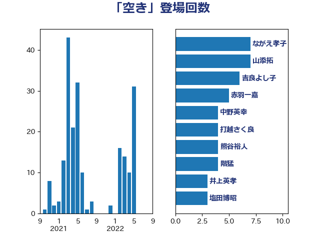

単語「空き」

| ながえ孝子 | 無所属 | 7 回 |
| 山添拓 | 日本共産党 | 7 回 |
| 吉良よし子 | 日本共産党 | 6 回 |
| 赤羽一嘉 | 公明党 | 5 回 |
| 中野英幸 | 自由民主党 | 4 回 |
| 打越さく良 | 立憲民主党 | 4 回 |
| 熊谷裕人 | 立憲民主党 | 4 回 |
| 階猛 | 立憲民主党 | 4 回 |
| 井上英孝 | 日本維新の会 | 3 回 |
| 塩田博昭 | 公明党 | 3 回 |
| 宮本徹 | 日本共産党 | 3 回 |
| 平沢勝栄 | 自由民主党 | 3 回 |
| 梶山弘志 | 自由民主党 | 3 回 |
| 茂木敏充 | 自由民主党 | 3 回 |
| 萩生田光一 | 自由民主党 | 3 回 |
| 西銘恒三郎 | 自由民主党 | 3 回 |
| 長友慎治 | 国民民主党 | 3 回 |
| 伊波洋一 | 無所属 | 2 回 |
| 伊藤孝恵 | 国民民主党 | 2 回 |
| 國重徹 | 公明党 | 2 回 |
| 後藤茂之 | 自由民主党 | 2 回 |
| 斉藤鉄夫 | 公明党 | 2 回 |
| 末松信介 | 自由民主党 | 2 回 |
| 河野太郎 | 自由民主党 | 2 回 |
| 田村憲久 | 自由民主党 | 2 回 |
| 田村貴昭 | 日本共産党 | 2 回 |
| 西村康稔 | 自由民主党 | 2 回 |
| 野田聖子 | 自由民主党 | 2 回 |
| 下野六太 | 公明党 | 1 回 |
| 仁木博文 | 無所属 | 1 回 |
| 今井絵理子 | 自由民主党 | 1 回 |
| 伊藤孝江 | 公明党 | 1 回 |
| 伊藤岳 | 日本共産党 | 1 回 |
| 坂本哲志 | 自由民主党 | 1 回 |
| 堀内詔子 | 自由民主党 | 1 回 |
| 堀場幸子 | 日本維新の会 | 1 回 |
| 堤かなめ | 立憲民主党 | 1 回 |
| 大西健介 | 立憲民主党 | 1 回 |
| 安達澄 | 無所属 | 1 回 |
| 小泉進次郎 | 自由民主党 | 1 回 |
| 山下芳生 | 日本共産党 | 1 回 |
| 岡本三成 | 公明党 | 1 回 |
| 岩谷良平 | 日本維新の会 | 1 回 |
| 後藤祐一 | 立憲民主党 | 1 回 |
| 徳永エリ | 立憲民主党 | 1 回 |
| 斎藤嘉隆 | 立憲民主党 | 1 回 |
| 朝日健太郎 | 自由民主党 | 1 回 |
| 松沢成文 | 日本維新の会 | 1 回 |
| 梅村聡 | 日本維新の会 | 1 回 |
| 河西宏一 | 公明党 | 1 回 |
| 清水真人 | 自由民主党 | 1 回 |
| 清水貴之 | 日本維新の会 | 1 回 |
| 渡辺猛之 | 自由民主党 | 1 回 |
| 熊田裕通 | 自由民主党 | 1 回 |
| 田村智子 | 日本共産党 | 1 回 |
| 石井啓一 | 公明党 | 1 回 |
| 石垣のりこ | 立憲民主党 | 1 回 |
| 福島みずほ | 社会民主党 | 1 回 |
| 稲富修二 | 立憲民主党 | 1 回 |
| 美延映夫 | 日本維新の会 | 1 回 |
| 舩後靖彦 | れいわ新選組 | 1 回 |
| 芳賀道也 | 国民民主党 | 1 回 |
| 谷田川元 | 立憲民主党 | 1 回 |
| 足立康史 | 日本維新の会 | 1 回 |
| 遠藤敬 | 日本維新の会 | 1 回 |
| 金城泰邦 | 公明党 | 1 回 |
| 長坂康正 | 自由民主党 | 1 回 |
| 長妻昭 | 立憲民主党 | 1 回 |
| 高橋千鶴子 | 日本共産党 | 1 回 |